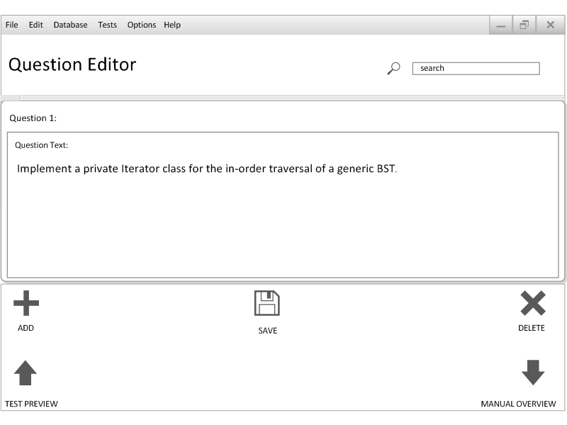

Figure 2.3.4.1: Step 3 of Test Generation
When the "EDIT" button is clicked, a Qustion Edit Panel will pop up as shown below:

Figure 2.3.4.2: Edit Pane
From this panel, there are a few things the instructor can do.
- The Instructor can edit the question body
- The Instructor can save his edits to the database
- After editing and saving the question, the Professor can then add the question to the test
- The Instructor can also delete this question from the test
- At any time, the Instructor can click on the "TEST PREVIEW" button to go to a visual overview of the entire test
- When the Instructor is finished, he/she can click on the "MANUAL OVERVIEW" button to go back to Step 3 of Test Generation.